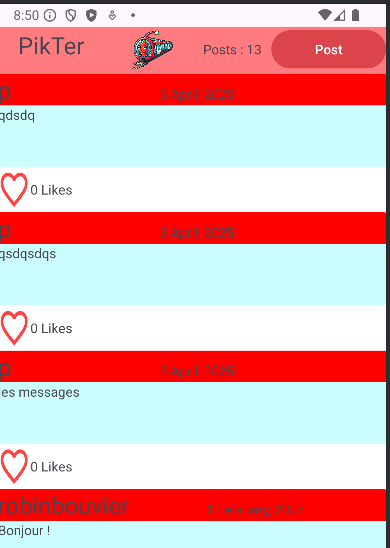
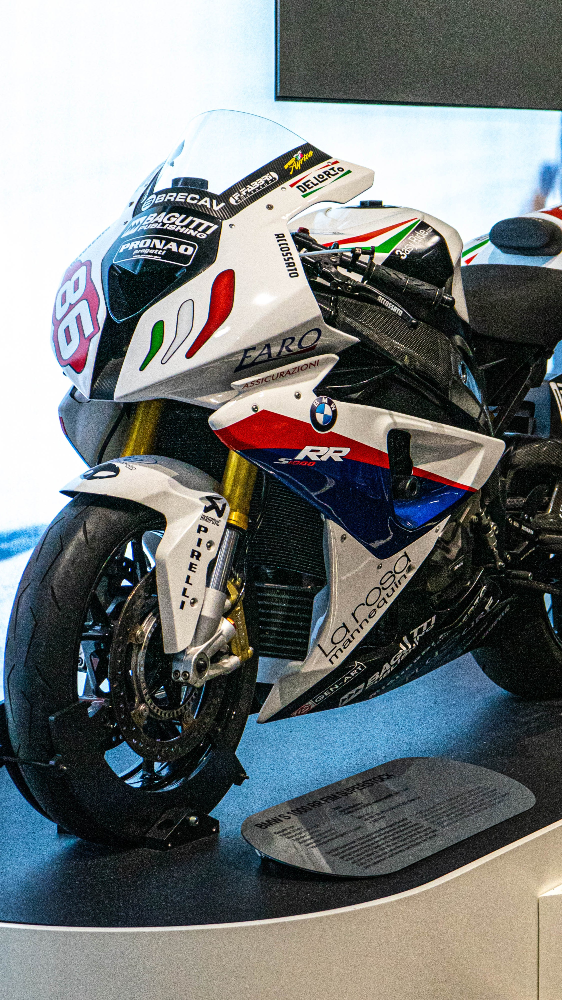
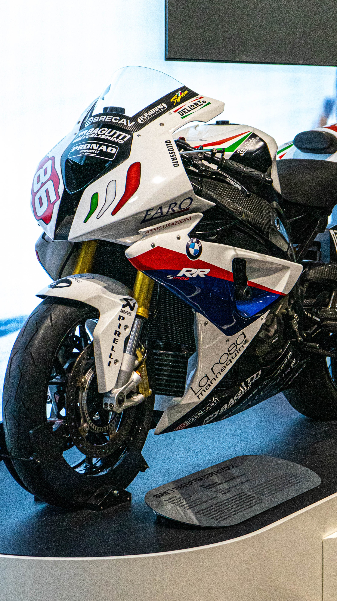

Projets
Création d'une application WEB
Jeu de mémoire en PHP
Création de réseau (Projet intégratif)
Creation d'application android
Dans le cadre d'un projet appelé SAE, j'ai travaillé sur une solution informatique pour une entreprise.
L'objetif était de faciliter le service et le dépannage pour les usagers à travers un site web interactif.
J'ai utilisé JavaScript pour le développement web et MongoDB pour la gestion de la base de données. J'ai mis en place une interface permettant aux usagers de créer des tickets et aux administrateurs de les gérer efficacement.
Résultat : Le site web interactif était fonctionnel rendant la gestion des tickets plus efficace et réactive.
J'ai développer un jeu de mémoire en PHP.
L'objectif était d'utiliser mes compétences en programmation web pour créer un jeu de mémoire interactif.
Pour cela j'ai conçu un jeu où les joueurs doivent associer des paires de cartes cachées, en utilisant PHP, CSS et HTML.
Résultat : Le jeu de mémoire fonctionne parfaitement sur une page web, offrant une expérience de jeu rapide et accessible.
En fin de première année, j'ai été amené à évaluer les besoins d'une entreprise fictive et à y répondre au mieux. Avec mon groupe, nous avons étudié les divers besoins qu'une entreprise peut avoir en matière d'équipement fonctionnant en réseau, allant du matériel aux logiciels, et nous avons proposé une solution technique. Par la suite, nous avons réalisé cette solution technique. La difficulté résidait dans l'utilisation de nombreux nouveaux outils, mais grâce à notre détermination et à la documentation, nous avons réussi à nous adapter aux outils à notre disposition. Nous avons ainsi pu mettre en place le réseau et tout ce qui permet à une entreprise de fonctionner sereinement et sans contrainte, même lors de futures expansions.
Résultat : le réseau fonctionnait parfaitement et nous avons pu monter en compétences et parfaires notre savoir dans pratiquement tout les domaines de la formation.
Création d'une application Android En utilisant Java, j'ai développé une application Android qui permet aux utilisateurs de communiquer entre eux. L’application offre une interface simple et intuitive, facilitant les échanges en temps réel. Pour assurer une expérience fluide, j’ai implémenté un système de messagerie basé sur Firebase, permettant l'envoi et la réception de messages instantanés. J’ai également intégré des notifications push pour alerter les utilisateurs des nouveaux messages. Côté interface, j’ai utilisé XML pour concevoir un design épuré et responsive, garantissant une bonne ergonomie sur différents appareils. Enfin, j’ai optimisé les performances de l’application en réduisant la consommation de ressources et en améliorant la gestion des connexions réseau.
 
